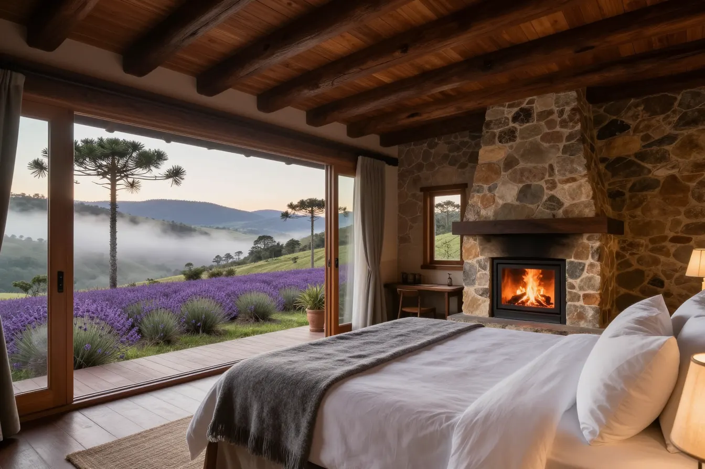

Serra da Mantiqueira · 1.600 m
Onde a serradesacelera o tempo.
Seis suítes entre campos de lavanda, com lareira, banheira e café servido na varanda. Duas horas e meia de São Paulo, um mundo de distância da pressa.
A serra a cada hora
Resposta rápida
O que é o Alto Lume?
Um refúgio pequeno na Serra da Mantiqueira, com seis suítes espalhadas por 40 hectares de lavanda, feito para descansar sem pressa.
A casa principal tem a sala de lareira, a cozinha e a varanda do café. As suítes ficam afastadas umas das outras, cada uma com a sua vista: o vale de neblina, o campo de lavanda ou a serra inteira, do alto do morro.
Não é hotel nem casa de temporada. É uma pousada de família, com equipe da região, comida feita aqui e regras claras, escritas antes de você pagar.
| Diária | R$ 890 a R$ 1.490 por noite, para duas pessoas |
|---|---|
| Café da manhã | Incluso, das 8h às 11h |
| Entrada e saída | A partir das 14h · até as 12h |
| Mínimo de noites | Duas, em estadia com sábado ou feriado |
| Distância | 2h30 de São Paulo, asfalto até a porteira |
| Altitude | 1.600 m · 14 °C de média no inverno |
| Cachorro | Na Casa do Mirante |
| Crianças | A partir de 7 anos |
| Pagamento | Sinal de 30% no Pix · saldo na chegada |
- Seis suítes, nunca mais de doze hóspedes: a casa não lota e ninguém espera mesa no café.
- O preço do site já tem café da manhã e taxas. Não há cobrança extra na chegada, salvo o jantar e a taxa de pet.
- A florada da lavanda vai de dezembro a fevereiro. No inverno, o campo fica verde e o frio é o espetáculo.
- Não há televisão nas suítes. Há lareira, livros, telescópio e um silêncio que se ouve.
- Cancelando até 15 dias antes, o sinal volta inteiro. A política completa está escrita, sem letra miúda.
O lugar
Aqui ninguém tem pressa. De manhã a neblina cobre o vale, à tarde a lavanda vai até onde a vista alcança, e no fim do dia a lareira já está acesa esperando você.
Suítes
Três jeitos de ficar.
Todas com café da manhã na varanda, roupa de cama de algodão egípcio e vista para a serra. Nenhuma tem televisão, e ninguém sente falta.

Para doisSuíte Neblina
- 32 m²
- lareira
- vista do vale
R$ 890 a noite, com café
Ver a suíte Para dois
Para doisSuíte Lavanda
- 44 m²
- banheira
- deck no campo
R$ 1.090 a noite, com café
Ver a suíte Até quatro
Até quatroCasa do Mirante
- 78 m²
- dois quartos
- cozinha
R$ 1.490 a noite, com café
Ver a suíte| Suíte Neblina | Suíte Lavanda | Casa do Mirante | |
|---|---|---|---|
| Diária, com café | R$ 890 | R$ 1.090 | R$ 1.490 |
| Área | 32 m² | 44 m² | 78 m² |
| Pessoas | até 2 | até 2 | até 4 |
| Cama | king | king | king + 2 de solteiro |
| Lareira | Sim | Não | Sim |
| Banheira | Não | Sim | Não |
| Cozinha | Não | Não | Sim |
| Aceita cachorro | Não | Não | Sim |
| Melhor para | casal, inverno | casal, aniversário | família, amigos, pets |
Experiências
O dia passa devagar.
- 01Incluso
Café na varanda
Pão de fermentação natural, queijos da serra e mel do nosso apiário, servido até as 11h.
- 02Dez a fev
Colheita de lavanda
Uma manhã no campo com quem cuida dele. Você leva para casa o seu buquê seco.
- 03Sáb e dom
Trilha do Mirante
Duas horas de caminhada leve até o ponto mais alto da propriedade, com guia da região.
- 04Céu limpo
Céu de estrelas
Deck aquecido, manta, vinho e um telescópio. Longe da cidade, a Via Láctea aparece inteira.
- 05Sob reserva
Jantar de quatro tempos
Truta, legumes da horta e sobremesa com lavanda, à luz de velas, de quinta a sábado.


Como reservar
Três passos, sem cadastro.
Escolha as datas
No simulador você vê na hora o valor da estadia, já com o café da manhã. Ele avisa se a data pede mínimo de duas noites.
Mande o pedido
O botão abre o WhatsApp da casa com a mensagem pronta: suíte, datas, número de pessoas e valor.
Confirme com o sinal
Respondemos em até duas horas com a confirmação e a chave Pix. Com o sinal de 30%, as datas são suas.
Em toda estadia
O que já está no preço.
Nada de taxa de serviço escondida nem cobrança por toalha extra. O valor do simulador é o que você paga.
Por que aqui
Pequeno de propósito.
O Alto Lume poderia ter vinte quartos. Tem seis. A conta fecha porque a casa vive da lavanda, da cozinha e de quem volta todo ano, e porque descanso não combina com fila no café.
- Distância entre as suítesA mais próxima fica a 40 metros da vizinha. Da sua varanda, você não ouve conversa nenhuma.
- Comida da serraO pão sai do forno às 7h, o queijo vem de um sítio a 8 km e o mel é do nosso apiário. No jantar, a truta é de criação da região.
- Gente daquiQuem cuida do campo, da cozinha e da recepção mora na serra. As melhores dicas da região vêm deles.
- Regras escritas antesPreço, sinal, cancelamento, pets e horários estão neste site. Nada é combinado só no boca a boca.
Quando ir
Cada estação, um motivo.
O preço é o mesmo o ano inteiro. O que muda é a procura: julho e os fins de semana da florada esgotam primeiro.
| Época | Como está | Para quem |
|---|---|---|
| Dezembro a fevereiro | Florada da lavanda, dias de 22 °C a 26 °C, chuva rápida no fim da tarde | quem quer o campo roxo e a colheita |
| Março a maio | Céu limpo, noites frias e a casa mais vazia | quem quer silêncio e mais vaga |
| Junho a agosto | Geada nas madrugadas, lareira acesa, Via Láctea alta no céu | casais e quem gosta de frio; reserve com antecedência |
| Setembro a novembro | Brotação do campo, vento e primeiras chuvas | trilhas, cachoeira e passeios pela região |
Reserva
Escolha as datas.
O resto é com a gente.
Você vê o valor na hora e manda o pedido pelo WhatsApp. A confirmação chega em até duas horas, das 8h às 20h.
- Entrada a partir das 14h, saída até as 12h
- Mínimo de duas noites em estadia com sábado, feriado ou véspera de feriado
- Sinal de 30% no Pix para garantir as datas; o saldo, na chegada
- Cancelamento sem custo até 15 dias antes · regras completas
Guia da serra
Antes de pegar a estrada.
O que levar, quando a lavanda floresce e como ver a Via Láctea. Escrito por quem mora aqui.
O que levar na mala para a Serra da Mantiqueira
A 1.600 metros, o dia pode ter 22 °C e a noite, 4 °C. A lista por estação, e o que a casa já empresta.

Quando a lavanda floresce no Alto Lume
O calendário do campo mês a mês, o melhor horário para fotografar e como é a colheita com quem cuida dele.

Como ver a Via Láctea: guia para iniciantes
Lua, horário, para onde olhar e como acostumar os olhos ao escuro. E o que o telescópio da casa mostra.
Perguntas frequentes
O que todo mundo pergunta.
Quanto custa a diária no Alto Lume?+
De R$ 890 a R$ 1.490 por noite, conforme a suíte, com café da manhã incluso. O valor é o mesmo o ano todo; em estadias com noite de sábado ou de feriado, o mínimo é de duas noites.
Como faço a reserva?+
Escolha as datas e a suíte no simulador desta página e envie o pedido pelo WhatsApp. Respondemos em até duas horas, das 8h às 20h, com a confirmação e a chave Pix para o sinal de 30%.
O café da manhã está incluído?+
Sim. É servido na varanda da casa principal das 8h às 11h, com pão de fermentação natural, queijos da serra, frutas, bolo do dia e mel do apiário. Em dias frios, servimos dentro, perto da lareira.
Posso levar meu cachorro?+
Pode, na Casa do Mirante, que tem quintal cercado. Cobramos R$ 80 por estadia para a limpeza extra e pedimos a carteira de vacinação em dia. As outras suítes não recebem animais.
Aceitam crianças?+
Sim, a partir de 7 anos. A Casa do Mirante, com dois quartos, é a mais confortável para famílias. As suítes Neblina e Lavanda são pensadas para duas pessoas.
Como é a estrada até a pousada?+
Asfaltada até a porteira. Os últimos 900 metros dentro da propriedade são de cascalho firme, sem subida íngreme, e qualquer carro passa. Mandamos o caminho completo junto com a confirmação.
Faz muito frio?+
No inverno, de junho a agosto, as noites ficam entre 2 °C e 8 °C e pode gear. Todas as suítes têm aquecimento, edredom de pena e lareira ou aquecedor. No verão, as tardes são frescas e chove no fim do dia.
Tem Wi-Fi e sinal de celular?+
Tem Wi-Fi de fibra na casa principal e nas suítes. O sinal de celular é fraco em algumas partes do terreno; para trabalhar, a mesa da sala comum é o melhor ponto.
Qual é a política de cancelamento?+
Cancelando até 15 dias antes da chegada, devolvemos o sinal inteiro. Entre 14 e 7 dias, o sinal vira crédito para outra data nos próximos 6 meses. Com menos de 7 dias, o sinal fica retido. Os detalhes estão em Reserva e cancelamento.
Vocês servem almoço e jantar?+
Servimos um jantar de quatro tempos de quinta a sábado, com reserva até as 16h do mesmo dia. Almoço não servimos; indicamos dois restaurantes a 15 minutos de carro.
Para planejar a viagem
Fontes oficiais.
- Previsão do tempo · INMETInstituto Nacional de Meteorologia: frio, geada e chuva para a semana da viagem.
- Condições das rodovias · PRFAvisos da Polícia Rodoviária Federal sobre interdições nas estradas federais.
- Cadastur · Ministério do TurismoCadastro oficial dos meios de hospedagem. No site do cliente, entra o número dele.
Como chegar
A estrada é parte da viagem.
O caminho completo, com fotos dos pontos de referência, vai junto com a confirmação da reserva.
Antes de você vir
Tudo combinado, sem letra miúda.

Como chegar
Reserve o seu
silêncio.
Última parada: o portão de madeira, à direita.
@perfil-demonstrativo